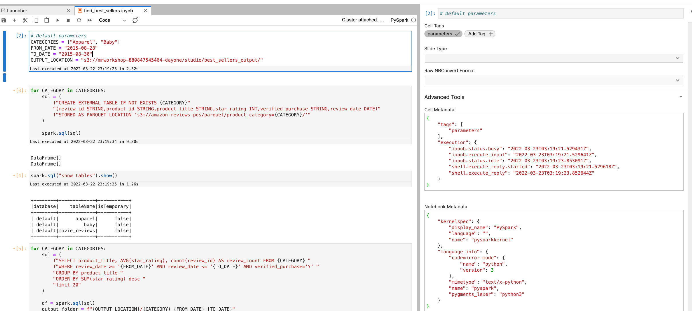
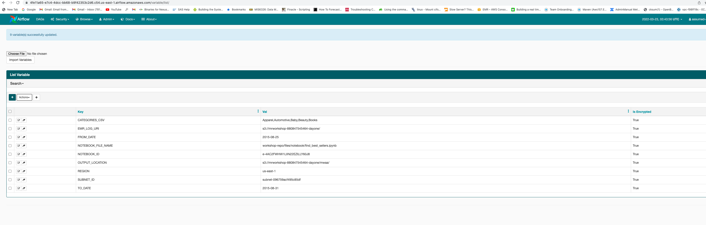
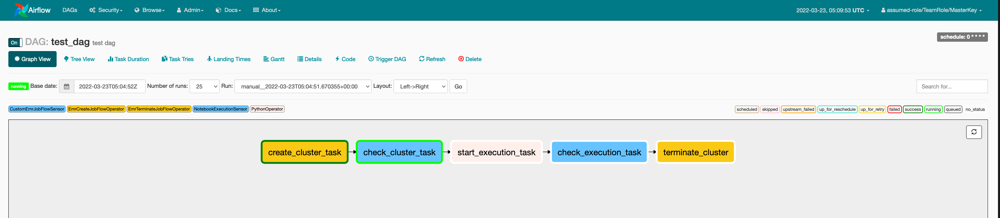
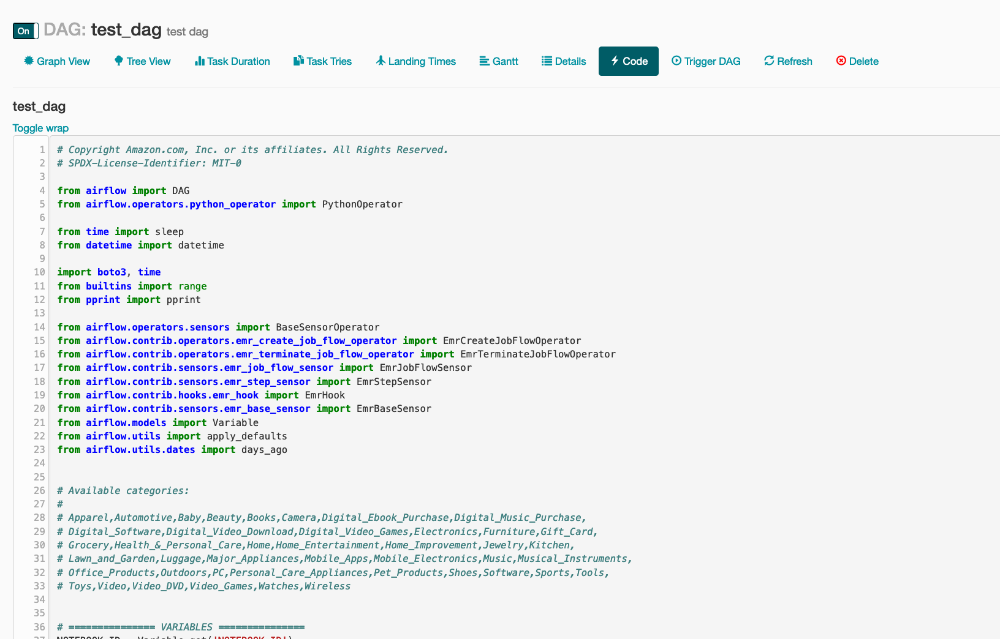
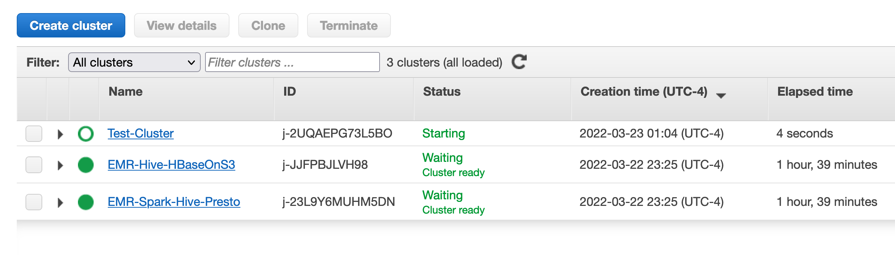
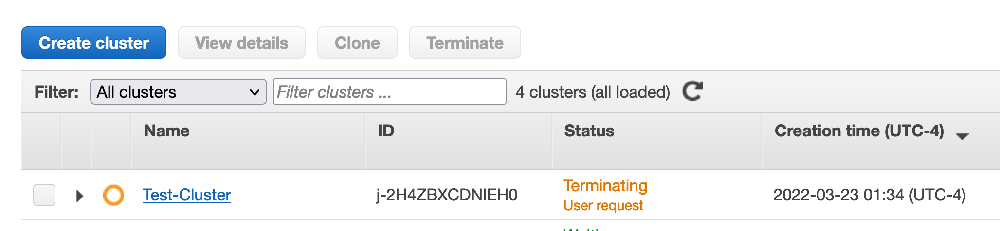

Orchestrating Notebook Pipelines using Amazon MWAA¶
In the previous Amazon EMR Studio exercise, you ran a parameterized notebook programmatically using start-notebook-execution API. In this exercise, we are going to orchestrate a pipeline with the same parameterized notebook find_best_sellers.ipynb using Amazon Managed Workflows for Apache Airflow
Go to your EMR Studio Workspace and make sure that you have "find_best_sellers.ipynb" under workspace-repo/files/notebook. If you uploaded the file manually, go to the path where you uploaded the file and make sure that the first cell in that notebook is tagged as parameters (View -> Show Right Bar -> Advanced Tools).
If this cell is not tagged as "parameters", re-do the parameterized notebooks section of Day 1 Exercises.

Once you have confirmed that, login to the EMR leader node of the cluster "EMR-Spark-Hive-Presto" or EC2 JumpHost Session Manager session (EC2 Web console -> Click on JumpHost -> Connect -> Session Manager -> Connect), run the following commands. Replace youraccountID with your AWS account ID.
sudo su ec2-user
cd ~
curl -o test_dag.py https://raw.githubusercontent.com/vasveena/amazon-emr-ttt-workshop/main/files/dags/test_dag.py
instanceProfileRole=$(aws iam list-instance-profiles-for-role --role-name emrEc2InstanceProfileRole | jq .'InstanceProfiles[].InstanceProfileName' | sed "s|\"||g")
sed -i "s|emrEc2InstanceProfileRole|$instanceProfileRole|g" test_dag.py
aws s3 cp test_dag.py s3://airflow-youraccountID-dayone/dags/
Go to the Managed Apache Airflow Web Console. (AWS Web Console -> Search for MWAA -> Select Managed Apache Airflow).

You will be able to see an Managed Airflow environment named "mwaa".

Click on "Open Airflow UI". You will be taken to the Managed Airflow UI.

Ignore the DAG Import Errors for now.
Create a file called "variables.json" like below using a notepad or a vi editor.
{
"REGION": "us-east-1",
"SUBNET_ID": "<subnet-id>",
"EMR_LOG_URI": "s3://mrworkshop-youraccountID-dayone/",
"NOTEBOOK_ID": "e-XXXXXXXXXXXXXXXXXXX",
"NOTEBOOK_FILE_NAME": "workshop-repo/files/notebook/find_best_sellers.ipynb",
"CATEGORIES_CSV": "Apparel,Automotive,Baby,Beauty,Books",
"FROM_DATE": "2015-08-25",
"TO_DATE": "2015-08-31",
"OUTPUT_LOCATION": "s3://mrworkshop-youraccountID-dayone/mwaa/"
}
Replace youraccountID with your AWS Event Engine account ID. For the subnet ID, choose the subnet of the cluster "EMR-Spark-Hive-Presto" (AWS Web Console -> EMR -> EMR-Spark-Hive-Presto -> Summary tab -> Network and hardware section).

For the values of NOTEBOOK_ID and NOTEBOOK_FILE_NAME, use the same values you used in the Parameterized Notebooks exercise. i.e., take these values from your workspace URL (or from the API command you ran if you have saved it somewhere).
For example: https://e-4ac2fwhw1liin22ezilly60j8.emrnotebooks-prod.us-east-1.amazonaws.com/e-4AC2FWHW1LIIN22EZILLY60J8/lab/tree/workshop-repo/files/notebook/find_best_sellers.ipynb
An example variables.json file with values entered:
{
"REGION": "us-east-1",
"SUBNET_ID": "subnet-096759acf495c85df",
"EMR_LOG_URI": "s3://mrworkshop-880847545464-dayone/",
"NOTEBOOK_ID": "e-4AC2FWHW1LIIN22EZILLY60J8",
"NOTEBOOK_FILE_NAME": "workshop-repo/files/notebook/find_best_sellers.ipynb",
"CATEGORIES_CSV": "Apparel,Automotive,Baby,Beauty,Books",
"FROM_DATE": "2015-08-25",
"TO_DATE": "2015-08-31",
"OUTPUT_LOCATION": "s3://mrworkshop-880847545464-dayone/mwaa/"
}
Now let's upload this file into the Airflow UI. Go to Airflow UI -> Admin -> Variables. Click on "Choose File". Choose the variables.json you created from your local desktop and click on "Import Variables" to import the file.

Now go to the DAGs on the top left corner and you should be able to see your DAG "test_dag".

Turn on the DAG by using the Toggle switch.

This DAG will execute once at the start of each hour (based on cron schedule: 0 * * ). For now, let us execute the DAG manually. Click on "Trigger DAG".

Trigger the DAG.

Your DAG will start to execute. Click on the DAG runs -> DAG ID -> test_dag. You will see the graph view of this execution. Analyze the steps in this DAG.

Also, analyze the DAG code by clicking on "Code".

Now, if you go to the EMR Web Console, you can see a new cluster called "Test-Cluster" being launched.

The DAG steps will create a new cluster, submit the notebook API as pipeline and terminate the cluster once the job is finished. From start to finish, this DAG will take about 15-20 mins to complete. Please note that it is not necessary to have your EMR Studio Workspace attached to an EMR cluster to be able to run this notebook pipeline since your notebooks will be persisted in the S3 location of your EMR Studio.
After 15 mins, check the DAG execution status.

Now, let's check the S3 location you provided as parameter "OUTPUT_LOCATION" in your variables.json. This is where your job output is going to be stored. Run the below command on EC2 JumpHost Session Manager session. Replace youraccountID with your AWS event engine account ID.
aws s3 ls s3://mrworkshop-156321623241-dayone/mwaa/
Alternatively, you can go to the S3 Web Console and check this location in the console as well.
You should be able to see the output files for the 5 categories we passed as parameter in variables.json: "Apparel,Automotive,Baby,Beauty,Books"

After the job is finished, the cluster "Test-cluster" will be automatically terminated.

This DAG will be executed once every hour automatically. You can play around by changing the notebook parameters or pipeline schedule. You can stop the DAG by using the toggle switch and turn it OFF.
Another way to do this is by using AWS Step Functions. Next day's session, we will orchestrate Hive ETL pipelines using AWS Step Functions to demonstrate this capability.